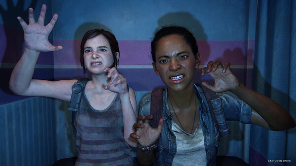

พบกับเนื้อเรื่องสุดสะเทือนอารมณ์และตัวละครอันเป็นที่จดจำใน The Last of Us™ ที่กระชากรางวัล Game of the Year จากคู่แข่งกว่า 200 เกมในยุคที่ความรุ่งเรืองเสื่้อมสลาย ยุคที่เหล่าผู้รอดชีวิตสุดแกร่งต้องเอาตัวรอดจากผู้ติดเชื้อ ตัวเอกผู้ที่ใจสลายอย่างโจเอลได้รับการว่าจ้างให้พาเอลลี่ เด็กหญิงอายุ 14 ปีไปส่งที่นอกพื้นที่กักกันของทหาร แต่ว่าจากงานเล็ก ๆ กลับกลายเป็นการเดินทางสุดทรหดข้ามประเทศ